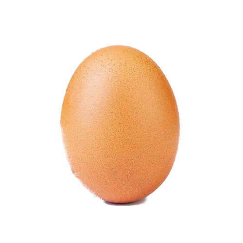

A puha vajat összedolgozom a zúzott fokhagymával és a petrezselyemmel, majd alaposan megkenem vele a félbevágott zsemlék tetejét.
A sajtot lereszelem, hozzáadom a tojásokat, megszórom fűszerpaprikával és sóval, majd alaposan összekeverem. A sajtos keveréket egyenletesen elosztom a megkent zsemléken.
A kolbászt karikára vágom, és finoman belenyomkodom a sajtos masszába. A zsemléket sütőpapírral bélelt tepsire helyezem, majd alsó-felső sütésen, 180 °C-on, 15–20 perc alatt megsütöm, amíg a sajt szépen megolvad, aranybarnára pirul, a zsemle széle pedig ropogós lesz.